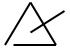
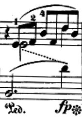
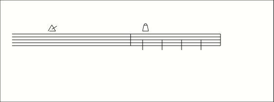
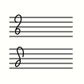
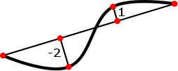

This chapter describes basic principles and shared concepts of MEI. Besides giving
a general understanding of the basic structures of an MEI file it tries to introduce
elements, models, and attributes that are part of the MEI.shared module, describe
their use or at least point to chapters of these guidelines or tutorials that describe
their use and application.
2.1Structural Elements
Besides elements used by multiple other modules the MEI.shared module defines the
main structural elements of an MEI file. Please be aware that there is also a A short tutorial about the basics of XML & MEI that helps understanding and learning the contents of this chapter.
2.1.1Document Root Elements
MEI defines four elements qualifying as root elements (i.e., the element containing everything else) of an MEI document; the most common of these
are defined in the MEI.shared module:
Contains a single MEI-conformant document, consisting of an MEI header and a musical
text,
either in isolation or as part of an meiCorpus element.
The most straightforward – and probably the most common choice fitting most of the
use cases when encoding music – is the <mei> element. It contains an <meiHead> element for capturing metadata and a <music> element for describing the musical text. A more detailed description of the application
of <music> can be found in the course of this section (see 2.1.1 General Music Structure Elements). If you want to learn more about the use of the <meiHead> element – formally declared in the MEI.header module – please visit the chapter 3.1 Structure of the MEI Header in the B3 Metadata in MEI section.
The below example shows the basic structure of an MEI file with <mei> as root element. Please be aware that this example still does not represent a valid
MEI file:
<mei meiversion="6.0-dev">
<meiHead>
<!-- metadata goes here -->
</meiHead>
<music>
<!-- description of musical text goes here -->
</music>
</mei>
Listing 4. Basic structure of an MEI file
The other potential root elements serve different use cases or purposes.
Contains a single musical text of any kind, whether unitary or composite, for example,
an
etude, opera, song cycle, symphony, or anthology of piano solos.
A document with <music> as root element provides music notation markup without metadata, and could serve
embedding MEI within other kinds of markup, e.g., TEI (see 12.1 TEI).
The below example shows the basic structure of an MEI file with <music> as root element. Basically this already represents a valid MEI file, although without
any contents:
<music meiversion="6.0-dev">
<!-- description of musical text goes here -->
</music>
Listing 5. Basic structure of an MEI file with <music> as root element
A group of related MEI documents, consisting of a header for the group, and
one or more <mei> elements, each with its own complete header.
<meiCorpus> contains an <meiHead> element describing a collection of related MEI-encoded texts – known as a corpus
– and an <mei> element for each text. Further information regarding the organization and encoding
of music corpora is given in chapter 3.1.1 Musical Corpora.
The below example shows the basic structure of an MEI file with <meiCorpus> as root element. Please be aware that this example still does not represent a valid
MEI file:
<meiCorpus meiversion="6.0-dev">
<meiHead>
<!-- metadata on the corpus goes here -->
</meiHead>
<mei>
<meiHead>
<!-- metadata on first text goes here -->
</meiHead>
<music>
<!-- description of first musical text goes here -->
</music>
</mei>
<mei>
<meiHead>
<!-- metadata on second text goes here -->
</meiHead>
<music>
<!-- description of second musical text goes here -->
</music>
</mei>
<mei>
<meiHead>
<!-- metadata on … text goes here -->
</meiHead>
<music>
<!-- description of … musical text goes here -->
</music>
</mei>
</meiCorpus>
Listing 6. Basic structure of an MEI file with <meiCorpus> as root element
Supplies the descriptive and declarative metadata prefixed to every
MEI-conformant text.
The <meiHead> element, formally declared in the MEI.header module, is described in chapter 3.1 Structure of the MEI Header. A document with <meiHead> as root element only contains metadata and is also known as an independent or stand-alone
header. Stand-alone headers are more fully described in chapter 3.1.1 Independent Headers.
The below example shows the basic structure of an MEI file with <meiHead> as root element. Please be aware that this example still does not represent a valid
MEI file:
<meiHead meiversion="6.0-dev">
<!-- metadata goes here -->
</meiHead>
Listing 7. Basic structure of an MEI file with <meiHead> as root element
The above examples all carry two attributes on their root elements. While the @xmlns is a general feature of XML and not defined in MEI it is crucial for stating the
fact that it is an MEI file you are dealing with. The second attribute is att.meiVersion.
Although not required the att.meiVersion attribute is important for defining a stable reference to a specific MEI-version
used in the enclosed encoding, and thus is highly recommended on your root element.
Contains a single musical text of any kind, whether unitary or composite, for example,
an
etude, opera, song cycle, symphony, or anthology of piano solos.
As indicated above, the general place for encoding the musical text is the <music> element. MEI.shared offers two possible child elements:
Contains a composite musical text, grouping together a sequence of distinct musical
texts
(or groups of such musical texts) which are regarded as a unit for some purpose, for
example,
the collected works of a composer.
While <body> holds the contents of a single musical text, <group> allows the textual body to consists of a series of (subordinate) musical texts or
other e.g., to represent a collection of independent musical texts which is to be regarded as
a single unit for processing or other purposes. It is provided to simplify the encoding
of collections, anthologies, and cyclic works. It can also be used to record the potentially
complex internal structure of corpora, covered more fully in chapter 3.1.1 Musical Corpora. Whether the musical text being encoded should be structured one way or the other
is not to be decided here. For example, a collection of songs might be regarded as
a single item in some circumstances, or as a number of distinct items in others. In
such borderline cases, the encoder must choose whether to treat the text as unitary
or composite; each option may have advantages and disadvantages.
Please be aware that the following examples still do not reflect valid MEI files as
they are missing some required elements not defined in the MEI.shared module.
<mei>
<meiHead>
<!-- metadata goes here -->
</meiHead>
<music>
<front>
<!-- front matter of text, if any, goes here -->
</front>
<body>
<!-- body of text goes here -->
</body>
<back>
<!-- back matter of text, if any, goes here -->
</back>
</music>
</mei>
Listing 8. The basic structure of a unitary musical text
Examples of composite texts which may be represented using the <group> element include anthologies and other collections. The presence of common front matter
referring to the whole collection, possibly in addition to front matter relating to
each individual musical text, is a good indication that a given musical text might
usefully be encoded in this way.
For example, the overall structure of a collection of songs might be encoded as follows:
<music>
<group>
<music>
<!-- song 1 -->
</music>
<music>
<!-- song 2 -->
</music>
<!-- additional songs here -->
</group>
</music>
Listing 9. The <group> element groups together a sequence of distinct musical texts
A group of musical texts may contain other unitary and grouped texts:
<music>
<group>
<music>
<!-- song 1 -->
</music>
<group>
<!-- songs sharing one or more characteristics, treated as a group -->
<music>
<!-- song 2 -->
</music>
<music>
<!-- song 3 -->
</music>
</group>
</group>
</music>
Listing 10. The <group> element contains unitary and grouped texts
The <group> element may be used to encode any kind of collection in which the constituents are
regarded by the encoder as works in their own right, such as ad hoc single- or multiple-composer collections or anthologies of works not originally conceived
of as a single composition.
2.1.1.1Divisions of the Body
This section describes sub-division of the <body> of a musical text. Front and back matter are described in chapter 7.1 Text in MEI.
Contains one or more URIs which denote classification terms that apply to the entity
bearing this attribute.
The body of a unitary musical text may contain one or more discrete, linear segments.
The names commonly used for these structural subdivisions vary with the genre, style,
and time period of the music, or even at the whim of the author, editor, or publisher.
For example, a major subdivision of a symphony is generally referred to as a ‘movement’.
An opera, on the other hand, is usually organized into ‘acts’ and then further by
‘scenes’. All such divisions are treated as occurrences of the same neutrally-named
<mdiv> element. The attributes @type or @class may be used to categorize them independently of their hierarchic level.
To accommodate "divisions within divisions", an <mdiv> element may contain additional <mdiv> sub-elements nested to any level required. For example, the encoding of a multi-movement
work, such as a symphony, might have the following structure:
<body>
<mdiv type="symphony">
<mdiv n="1"type="movement">
<!-- contents of mvt 1 -->
</mdiv>
<mdiv n="2"type="movement">
<!-- contents of mvt 2 -->
</mdiv>
<mdiv n="3"type="movement">
<!-- contents of mvt 3 -->
</mdiv>
<mdiv n="4"type="movement">
<!-- contents of mvt 4 -->
</mdiv>
</mdiv>
</body>
Listing 11. The <mdiv> element contains additional <mdiv> sub-elements
While dramatic works, such as Verdi's opera, Il Trovatore, often exhibit a more deeply-nested structure:
<body>
<mdiv type="opera">
<mdiv n="I"type="act">
<mdiv n="1"type="scene">
<!-- contents of act I, sc. 1 -->
</mdiv>
<mdiv n="2"type="scene">
<!-- contents of act I, sc. 2-->
</mdiv>
<mdiv n="3"type="scene">
<!-- contents of act I, sc. 3 -->
</mdiv>
</mdiv>
<mdiv n="II"type="act">
<mdiv n="1"type="scene">
<!-- contents of act II, sc. 1 -->
</mdiv>
<mdiv n="2"type="scene">
<!-- contents of act II, sc. 2 -->
</mdiv>
<mdiv n="3"type="scene">
<!-- contents of act II, sc. 3 -->
</mdiv>
<mdiv n="4"type="scene">
<!-- contents of act II, sc. 4 -->
</mdiv>
<mdiv n="5"type="scene">
<!-- contents of act II, sc. 5 -->
</mdiv>
</mdiv>
<mdiv n="III"type="act">
<mdiv n="1"type="scene">
<!-- contents of act III, sc. 1 -->
</mdiv>
<mdiv n="2"type="scene">
<!-- contents of act III, sc. 2 -->
</mdiv>
<mdiv n="3"type="scene">
<!-- contents of act III, sc. 3 -->
</mdiv>
</mdiv>
<mdiv n="IV"type="act">
<mdiv n="1"type="scene">
<!-- contents of act IV, sc. 1 -->
</mdiv>
<mdiv n="2"type="scene">
<!-- contents of act IV, sc. 2 -->
</mdiv>
<mdiv n="3"type="scene">
<!-- contents of act IV, sc. 3 -->
</mdiv>
</mdiv>
</mdiv>
</body>
Listing 12. The use of <mdiv> elements can create a deeply-nested structure
Conventionally, in performance the musical structures represented by <mdiv> elements are separated by pauses; however, attacca, attacca subito, seque, or similar terms are sometimes used at the end of an <mdiv> to indicate that the next <mdiv> should begin immediately after the conclusion of the current one. These terms have
no effect, however, on the logical segmentation of musical content using <mdiv> elements.
2.1.1.1Content of Musical Divisions
The contents of <mdiv> can be organized according to the two encoding paradigms provided by the <score> and <parts> elements.
The <score> element represents notation in which all the parts of an ensemble are arranged on
vertically aligned staves, while the <parts> element collects the individually notated parts for each performer or group of performers.
The explicit encoding of these two ‘views’ is necessary because it is not always possible
or desirable to automatically derive one view from the other. In addition, separating
scores and parts can eliminate a great deal of markup complexity.
The <score> and <parts> elements may also be employed to accommodate different methods of organizing the
markup – with no particular presentation implied. In this case, software may render
a collection of parts as a score or a score as a collection of parts.
Within the collective <parts> element, notation for a single performer is represented by the <part> element:
An alternative visual rendition of the score from the point of view of a particular
performer (or group of performers).
A <part> is effectively a small-scale score, allowing all the encoding features of a full
score, such as multiple staves, performance directives, and so on. A group of <part> elements is useful for encoding performing parts when there is no score, such as
in early music part books; when the parts have non-aligning bar lines; when different
layout features, such as page turns, are needed for the score and parts; or for accommodating
software that requires part-by-part encoding.
Please note that <part> elements in MEI are not an indication of voice leading or staff grouping. Voice leading
can be encoded using the @next attribute, available on all the members of the model.eventLike class. The <staffGrp> element handles grouping of staves in the score context.
<parts>
<part label="Violin 1">
<!-- first performer’s part -->
</part>
<part label="Violin 2">
<!-- second performer’s part -->
</part>
<!-- additional performers’ parts -->
</parts>
Listing 14. The collective <parts> element with a group of <part> elements
In both score and part views, the <scoreDef> element is used to describe logical characteristics of the encoded music, such as
key signature, the sounding key (as opposed to the notated key signature), meter,
etc., and visual features, such as page size, staff groupings and display labels,
etc. The <staffGrp> elements within <scoreDef> and the order of <staffDef> elements inside <staffGrp> should follow the score order of the source for the encoding.
A <part> or <score> may be further divided into linear segments called "sections".
<section> elements are often used as a scoping mechanism for clef signs, key and meter signatures,
as well as metronome, tempo, and expression markings. Using <section> elements can help to minimize the need for backward scanning to establish context
when the starting point for access is not at the beginning of the score. <section> elements may also be used for other user-defined, i.e., analytical or editorial, purposes and may therefore be arbitrarily nested to any
desired level.
The <ending> element shares the same model as the <section> element. Unlike <section>, however, it may not be recursively nested.
Within <section> elements, several methods of organization are possible, depending upon the notational
style of the source material and the encoder's needs. For example, when the MEI.cmn
module is used, the default organization is measure-by-measure, with <staff> and <layer> sub-elements within each measure [not available in this MEI customization]. Further discussion of CMN notation is continued in chapter #cmn [not available in this MEI customization].
However, staff-by-staff organization is more appropriate for music without measures
and is provided when either the MEI.mensural or MEI.neumes module is employed. Coverage
of mensural notation is provided in chapter B4 Repertoire: Mensural Notation, while #neumes [not available in this MEI customization] describes neumatic notation.
It must be noted that, when both the MEI.cmn and MEI.mensural modules are available,
it is possible to encode CMN notation without using measure [not available in this MEI customization] elements; that is, staff-by-staff organization may be used and the ends of measures
marked using <barLine> elements.
In certain circumstances, this approach may be preferable for reproduction of the
visual layout of the music. However, the simultaneous use of the measure [not available in this MEI customization] and <barLine> elements may lead to confusion and should be avoided.
Typically, MEI follows the order of sections as they appear in the document being
encoded. When performance requires a different order, for instance in the case of
D.C. and D.S. directives, the following element may be used to define the performance
order.
Indicates how a section may be programmatically expanded into its 'through-composed'
form.
In the following example, <expansion> is used to indicate how the notated sections should be ordered in a "through-composed"
rendition, for example for machine performance or analysis. The @plist attribute contains an ordered list of identifiers of descendant <section>, <ending>, <lem>, or <rdg> elements. The sequence of values in the @plist attribute indicates that the section labelled 'A' comes first, then the section labelled
'B', followed by the 'A' section again. This mechanism must be specified independently
of any textual directives, such as "Da capo" or "D.S. al Fine", that may be present
in the document.
Listing 16. The <expansion> element uses the content of @plist to indicate how the notated sections should be ordered
2.1.1Document Layout Elements
This section introduces the elements that can be used to represent document layout
features in MEI, be it for the sake of capturing an original source's layout when
transcribing or setting up layout features in so called ‘born digital’ documents.
Provides a number-like designation that indicates an element’s position in a sequence
of similar elements. May not contain space characters.
The <pb> element can be used to mark page beginnings. When transcribing an existing document
the @n attribute should be used to record the page number displayed in the source. It need
not be an integer, e.g., 'iv', or 'p17-3'. The logical page number can be calculated by counting previous
<pb> ancestor elements. When used in a score context, a page beginning implies an accompanying
system beginning. This element is modelled on an element in the Text Encoding Initiative
(TEI) standard.
Contains a brief prose description of the appearance or description
of the content of a physical page.
Additional information can be provided on page beginnings. Ranging from a prose description
of the page layout in <pgDesc> to defined headers and footers.
Records the function (i.e., placement) of a page header or footer.
"Forme work" is the name for running elements (page headers and footers). Both <pgHead> and <pgFoot> have a @func attribute that allows encoders to specify to which page(s) the forme work element
applies. This includes alternating patterns.
Columned layout can be captured with the following elements:
An empty formatting element that forces musical notation to begin on
a new line.
Critical editions and collections of works often contain extensive text, such as a
title page, table of contents, an introductory essay, commentary, biographical sketch,
index, etc. These textual items may appear in either the <front> or <back> elements. The front and back elements, available only when the MEI.text module is
activated, are described more fully in chapter 7.1 Text in MEI.
May be used for any section of text that is organized as a group of lines;
however, it is most often used for a group of verse lines functioning as a formal
unit, e.g., a
stanza, refrain, verse paragraph, etc.
A container for document text that identifies the feature to which it is attached.
For a
"tool tip" or other generated label, use the @label attribute.
The character of elements specifying one or more score or staff parameters, such as
meter and key signature, clefs, etc., is that of a milestone; that is, they affect
all subsequent material until a following redefinition. A <scoreDef> element, which may affect more than just one staff, is allowed only within <score>, <part> and <section> elements, whereas <staffDef> is allowed only within <staffGrp>, <staff> and <layer>. A <staffDef> nested inside a <staff> must bear the same value for its @n attribute as its parent staff and may thus not affect other staves.
The actual use of these elements depends on the repertoire and historical context
of the source material. For details on their use in Common Western Notation, please
refer to chapter #cmnDefs [not available in this MEI customization].
2.1.1Staves and Layers
The elements below are used to capture the logical organization of musical notation:
A group of equidistant horizontal lines on which notes are placed in order to represent
pitch or a grouping element for individual 'strands' of notes, rests, etc. that may
or may not
actually be rendered on staff lines; that is, both diastematic and non-diastematic
signs.
The actual use of the <staff> and <layer> elements depends on the repertoire and historical context of the source material.
For details on their use in Common Western Notation, please refer to chapter #cmn [not available in this MEI customization]. For mensural notation, see chapter B4 Repertoire: Mensural Notation, and for neumatic notation, chapter #neumes [not available in this MEI customization].
2.1.1Basic Music Events
The basic features of music notation are represented by the following elements:
Records the output y coordinate of the stem’s attachment point.
2.1.1Other events
Because they can occur in the context of a stream of events on the staff, some elements
which are used in other contexts are also treated as events. For example, in addition
to being used to define the initial clef of a staff, the <clef> element can also be used to indicate a clef change.
2.1.1.1Key Signatures and Clefs
Key signatures and clefs as well as intra-staff changes to these musical parameters
are treated as events.
Symbol placed at the end of a line of music to indicate the first note of the next
line.
Sometimes called a "direct".
2.1.1.1Accidentals, Articulation Symbols, Augmentation Dots, and Custos Signs
The following elements are regarded as events primarily because they sometimes occur
independently of any associated notes, rests, or chords, especially in mensural and
neume repertoires.
Listing 17. Accidentals encoded as <accid> elements, independently from a <note> element (instead of @accid)
2.1.1.1Lyric Syllables
The <syl> element is used to mark a word or portion of a word that is to be vocally performed.
A fuller description of its use is provided in chapter 6.1 Lyric Syllables.
A placeholder used to fill an incomplete measure, layer, etc. most often so that the
combined duration of the events equals the number of beats in the measure.
In this context, the term ‘space’ is used to mean whitespace that is required to meaningfully
align multiple voices in a multi-voice texture. In DARMS these were referred to as ‘push codes’. The <space> element is most often used when a new voice appears on a staff mid-measure.
The <space> element may also be used to align material that crosses staves.
‘Space’ can be thought of as another kind of event. In fact, some refer to this concept
as an ‘invisible rest’.
While ‘space’ is meaningful, ‘padding’ is non-essential whitespace that is used to
shift the position of the events which follow.
An indication of extra visual space between notational elements.
The <pad> element is provided in order to capture software-dependent placement information
when it is desirable to do so. Unless the MEI file will be used as an intermediate
file format, this is usually not necessary.
2.1.1Expression Marks
Expression marks are instructions in the form of words, abbreviations, or symbols
that convey aspects of performance that cannot be expressed purely through the musical
notation.
2.1.1.1Text Directives
All of the following elements can be considered text directives; however, MEI uses
the <dir> element specifically for words, abbreviations, numbers, or symbols specifying or
suggesting the manner of performance that are not encoded elsewhere using the more
specific elements of <tempo> and <dynam>.
An instruction expressed as a combination of text and symbols, typically above,
below, or between staves, but not on the staff — that is not encoded elsewhere in
more specific
elements, like <tempo>, <dynam> or repeatMark [not available in this MEI customization].
Examples of directives include text strings such as 'affettuoso', fingering numbers,
or music symbols such as segno and coda symbols or fermatas over a bar line. Directives
can be control elements. That is, they can linked via their attributes to other events.
The starting point of the directive may be indicated by either a tstamp, tstamp.ges,
tstamp.real or startid attribute, while the ending point may be recorded by either
a tstamp2, dur, dur.ges or endid attribute. It is a semantic error not to specify
a starting point attribute.
2.1.1.1Tempo
Tempo marks are indications through words, abbreviations, or specific metronome settings
of the speed at which a piece of music is to be performed. Both instantaneous and
continuous tempo markings may be encoded using this element.
Dynamics, or dynamic marks, are terms, abbreviations, and symbols that indicate the
specific degrees of volume of a note, phrase, or section of music, e.g., "piano", "forte". Transitions from one volume level to another, e.g., "crescendo", "diminuendo", are also specified through dynamic marks.
Indication of the volume of a note, phrase, or section of music.
2.1.1.1Phrase Marks
Phrase marks are curved lines placed over or under notes to delineate short sections
of a work that represent a unified melodic idea, analogous to a phrase in literature.
MEI maintains a distinction between phrase marks and slurs, the latter being curved
lines over or under a sequence of notes indicating they are to be performed using
a particular playing/singing technique, notes that should be taken in a single breath
by wind instruments or played by string instruments using a single stroke of the bow.
Often, a slur also indicates that the affected notes should be played in a legato manner.
Even so, it is common for both of these concepts to be referred to generically as
"slurs". Therefore, unless one is encoding music from a repertoire in which this distinction
is important, the slur [not available in this MEI customization] element should be preferred over <phrase>.
2.1.1.1Ornaments
Ornaments are formulae of embellishment that can be realized by adding supplementary
notes to one or more notes of the melody.
An element indicating an ornament that is not a mordent, turn, or trill.
MEI provides a generic element for encoding an ornament symbol that is not a mordent,
turn, or trill. For those common CMN ornaments, please refer to #cmnOrnaments [not available in this MEI customization].
Ornaments can be represented as textual strings (e.g., with a Unicode symbol) or with a user defined symbol (for the latter also see 2.1 User-defined Symbols).
Ornaments may also be encoded as so called control events (see also: 1.1.1 Events and Controlevents). That is, they be can linked via their attributes to other events. It is a semantic
error not to specify a starting point attribute with either @tstamp or @startid.
2.1Common Attributes
The following attributes, all of which are defined in separate attribute classes but
are also provided through the att.common attribute class, are available on nearly all elements in an MEI encoding. They provide
e.g., the means to identify, label, or reference elements in MEI-encoded files.
2.1.1Attributes from the XML-namespace
The most general attributes that are very frequently encountered in MEI files are
not even native MEI attributes but are coming from the basic definition of XML in
the XML-namespace http://www.w3.org/XML/1998/namespace. MEI redefines some of them in the att.basic class.
Regularizes the naming of an element and thus facilitates building links between it
and other resources. Each id attribute within a document must have a unique value.
The value of the @xml:id attribute serves as an identifier for an element and its content. Its value must
be unique in the context of the current document and must conform to the definition
of an XML Name provided by the W3C Recommendation at http://www.w3.org/TR/xml/#NT-Name. Suggestions for constructing an @xml:id value can be found at http://www.w3.org/TR/xml/#sec-suggested-names.
The @xml:id attribute may take values similar to the following:
<!-- The following are all valid IDs. -->
<note xml:id="n1"/>
<note xml:id="_n1"/>
<note xml:id="thisIsMyFavoriteNote"/>
<note xml:id="shared.thisIsMyFavoriteNote"/>
Listing 19. Valid values for @xml:id
This is an example of an incorrectly-formulated @xml:id value:
<!-- xml:id not valid as IDs are not allowed to start with a number. -->
Provides a base URI reference with which applications can resolve relative URI
references into absolute URI references.
At many locations in an MEI file one can reference internal or external references.
E.g. the following example defines a graphic and references an external image (entity)
by means of the @target attribute:
When a reference to an external entity is not a complete URI it is resolved against
the current base URI; if not defined by other means this would be the location of
the current document. The above example consequently would mean, that the file `myImage.jpg`
referenced from <graphic> resides at the same location (in the same folder) as the MEI-file.
The @xml:base attribute may be used “to specify a base URI other than the base URI of the document
or external entity.” (Marsch, Jonathan; Tobin, Richard: XML Base (Second Edition).
W3C Recommendation 28 January 2009. online at: http://www.w3.org/TR/2009/REC-xmlbase-20090128/).
Listing 22. The <graphic> element uses @target and @xml:base
The value of @xml:base can be inherited from an ancestor. This is relevant for resolving relative links
or URIs within the document. A comprehensible use case can be illustrated by the following
example: the values of the graphic elements' @target attribute can be completed by the @xml:base value specified for the ancestor <facsimile> element:
Listing 23. Value of @xml:base inherits from the ancestor <facsimile> element
In order to determine an absolute URI, the base URIs of the element and all its ancestors
(including the document node) have to be taken into account. In the above case the
relative URIs of graphic/@target would consequently resolve to:
The @xml:id and @xml:base attributes are especially important when it comes to linking document fragments to
each other or to external entities. Many of the linking attributes are globally available
in MEI through the att.common attribute class.
Yet there are other attributes from the XML-Namespace encountered in MEI files.
Identifies the language of the element’s content. The values for this attribute are
language 'tags' as defined in BCP 47. All language tags that make use of private use
sub-tags must be documented in a corresponding language element in the MEI header
whose id
attribute is the same as the language tag’s value.
Allows one to signal to an application whether an element’s white space is
"significant". The behavior of xml:space cascades to all descendant elements, but
it can
be turned off locally by setting the xml:space attribute to the value default.
While @xml:lang attribute may be used to encode the language of an element's contents, the @xml:space attribute lets you define the handling of whitespace, i.e., whitespace being important content (preserve) or negligible (default). With the latter also being the default value if no @xml:space attribute is present.
Captures text to be used to generate a label for the element to which it’s attached,
a
"tool tip" or prefatory text, for example. Should not be used to record document
content.
Provides a numeric designation that indicates an element’s position in a sequence
of
similar elements. Its value must be a non-negative integer.
The @label and @n attributes both serve a labeling function; however, they differ in the values they
allow. The @n attribute must be a single token, while @label may contain a string value that includes spaces. This makes @label useful for the capture of free-text labels, but a name or number specified with @n may be easier to process.
<!-- Example of a @label containing whitespace: -->
Indicates the agent(s) responsible for some aspect of the text’s transcription,
editing, or encoding. Its value must point to one or more identifiers declared in
the
document header.
The elements provided by the usersymbols module may be used in two ways:
For defining lines, curves and text elements that cannot be represented by a more
specific element.
For defining reusable symbols and special graphical renditions.
For this purpose, it provides three elements as graphic primitives, <line>, <curve> and <anchoredText>. Anywhere these elements are allowed, the <symbol> element can be used as well. The <symbol> element facilitates the re-use of symbols that were defined by <symbolDef> elements.
2.1.1.1Defining Reusable Symbols
The <symbolDef> element uses SVG markup or the aforementioned graphic primitives to describe a symbol.
A symbol definition may also use symbols defined by other <symbolDef> elements by employing the <symbol> element.
The following code snippet shows a definition of a triangle percussion symbol using
graphic primitives:
<symbolDef xml:id="userSymbols.triangleSymbol3">
<line x="0"x2="2.55"y="0"y2="4.25"/>
<line x="2.55"x2="5.1"y="4.25"y2="0"/>
<line x="5.1"x2="0.85"y="0"y2="0"/>
</symbolDef>
Listing 25. Definition of a triangle percussion symbol using graphic primitivesFigure 1. Rendition of the triangle defined above
The following snippet encodes a symbol composed of the symbol defined above and additional
graphics primitives:
Listing 26. Symbol composed of the symbol defined above and additional graphics primitivesFigure 2. Rendition of the composite triangle symbol
2.1.1.1Elements Without Semantic Implications
The graphics primitives and symbols can be used directly in the music to describe
text and lines on a purely graphical level, without implying a specific logical meaning.
If possible, however, more meaningful elements should be used. This means for example,
"a tempo" or "da capo" should in general not be put inside <anchoredText>. Instead, <tempo> and <dir> should be used. Likewise, slurs and ties should be encoded using their respective
elements, not using <curve>, and for glissandi, gliss [not available in this MEI customization] should be used instead of <line>.
An example usage for <line> is the visualization of voice leading, which is not covered by a specific MEI element.
Figure 3. Voice leading visualization as found in an Edition Peters print of Album
für die Jugend by Schumann, No. 35 (Mignon), measure 6. (Unknown date, plate number
is 10478.)
The following code snippet shows the encoding of the above example:
2.1.1.1Defining a Specific Graphical Rendition for a Semantic Element
Usersymbols can define the rendition of different elements in two ways. Some elements,
for example <dir> and <tempo>, can have user symbol elements as content. In the following example, the content
of <dir> is used to provide pictograms of percussion instruments.
Figure 4. Indicating percussion instruments using pictograms
Listing 28. Encoding of above example of percussion instruments using pictograms.
Inside <symbolTable> the triangle and cowbell are encoded with <symbolDef> elements.
A number of elements can point to an internally-defined symbol for rendering using
the @altsym attribute.
Figure 5. Different treble clef renditions as written by Charpentier (source: Journal
of Seventeenth-Century Music, Volume 12, No. 1 (2006), figure 3) http://www.sscm-jscm.org/v12/no1/gosine.html
Listing 29. Defining two staffs, each using its own treble clef shape
Externally-defined symbols may be referenced using a @glyph.name or @glyph.num attribute from the att.extSym attribute class. Both attributes refer to Standard Music Font Layout (SMuFL) characters,
if not specified differently by the @glyph.auth and @glyph.uri attributes.
Listing 31. Use of glyph.name and glyph.num attributes
2.1.1Positioning and Coordinates
2.1.1.1Axis Orientation
MEI uses the classic axis directions where the x-axis points from left to right and
the y-axis points from bottom up. (This is compatible with PostScript's axis orientation,
while SVG's y-axis points in the opposite direction.)
2.1.1.1Units
There are two types of units used by MEI: Staff units and units of the output coordinate
system. Units of the output coordinate system can be translated to physical real world
distances by means of the @vu.height and @page.scale of a <scoreDef> element. Real world units are multiplied by the value of @page.scale to get the corresponding value in output coordinate units.
If an element is scaled using the @scale attribute, the actual size of the units changes accordingly.
2.1.1.1Positioning
An element may be positioned using either absolute or relative coordinates. If absolute
start point coordinates are specified using @x/@y coordinates (or their relatives @x2/@y2 for endpoints) they take precedence over relative positions specified by @ho/@vo/@to (or @startho/@startvo/@startto). Analogously, @x2/@y2 override @endho/@endvo/@endto.
If @to/@startto/@endto attributes are used, the start or end point is x-aligned with the indicated timestamp.
If relative start coordinates (@ho/@vo or @startho/@startvo) are used, the origin of the coordinate system to be used for the start point is
the first one found by the following search schema:
If @startid is present, the origin of the referenced element;
If the element is inside running text (e.g., inside <tempo>), the end of the preceding text or element;
Otherwise, the origin of the containing element.
The start point is offset from this origin by the value of the start coordinates (@ho/@vo or @startho/@startvo), using staff units.
Analogously, the endpoint is determined using end coordinates (@endho/@endvo). If @endid is specified, it takes precedence over @startid.
Examples of origins are:
<staff> and <layer>: The horizontal origin is the starting point of the measure, the vertical one is
the bottom staff line;
<note>: The horizontal origin is the left end of the notehead, the vertical one is the center
of the notehead;
<clef>: The horizontal origin is the left end of the clef, the vertical one the line specified
by <clef>/@line (or @clef.line);
For elements containing text: The left end of the baseline;
<symbolDef>: As symbol definitions aren't rendered directly, their coordinate system and origin
are considered virtual.
When they are referenced by <symbol> or @altsym, the origin of the context, i.e., the referencing symbol, is used. If neither absolute nor relative coordinates are
specified, determining visually suitable start and end points for @line and @curve attributes is left to the rendering application. A value of 0 is not always assumed
for absent relative coordinates. A typical example where a rendering application may
not choose the origins of absent relative start and end coordinates to be the start
point as well is the line connecting two notes in the above Schumann example.
2.1.1.1Curve Shape
If neither a @bezier nor @bulge attribute is present, the renderer determines a suitable shape. However, if @curvedir is present, the curve must respect the curvature direction specified there.
The attributes @bezier and @bulge define the shape of a curve in two different ways. If both are present, a rendering
application may choose either one. They override @curvedir.
@bezier defines the inner control points of a cubic Bézier curve, i.e., a Bézier curve with two inner control points. The coordinates are given by a space
separated list, first x and y offsets for the first control point, then x and y offsets
for the second one. The x and y offsets are given in staff units (or inside the context
of <symbolDef> in abstract units). The offsets for the first inner control point are relative to
the start point, the ones for the second inner control point are relative to the end
point.
The @bulge attribute allows specification of the curve shape by a number of interpolation points.
The interpolation points are given by their distance from the line connecting the
start and end point. The distance values are stored as a space separated list.
The interpolation points are calculated as follows: If @bulge provides n distance values, the connection line is divided into n+1 subsegments of equal length. The interpolation points are found by drawing a perpendicular
line of the respective length at each subsegment joint. Positive distance values are
drawn to the left of the connection line (left when traveling from start to end),
negative ones to the right.
Figure 6. Rendering a bulge attribute with value "-2 1"
The interpolation algorithm used by the rendering application is implementation dependent.
2.1.1Line Rendition
The @form attribute of the <line> element may take the following values:
dashed
dotted
solid
wavy
These attribute values are only qualitative. Actual dash length and dot and dash spacing
are implementation dependent.
The @width attribute may take the following values:
narrow
medium
wide
These values are also qualitative, however, they are also relative. That is, 'narrow'
is the default value, 'medium' is twice as wide as 'narrow', and 'wide' is twice as
wide as 'medium'.
In addition to textual values, the @width attribute may contain a numeric value and an optional unit, e.g., 2mm. If the unit value is not provided, MEI virtual units are presumed.
The same applies for <curve> elements with the @lform and @lwidth attributes from the att.lineRend.base class.
The @startsym and @endsym attributes name the symbol that may start and/or end a <line>, while @startsymsize and @endsymsize indicate the relative size of the symbol using a numeric value in the range from
1 to 9.
2.1.1Limitations
The usersymbols module does not currently support continuous composite lines or filled
areas. As mentioned above, the rendition of lines is highly implementation dependent.
Coordinate system transforms are restricted to scaling using @scale.